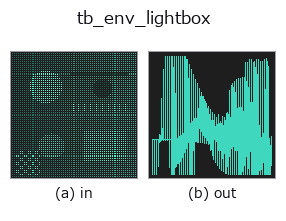

typed op• Datenarten: points → signal
• Aufruf: fullseye.apply(img, "tb_env_lightbox", a=0.5, b=0.5) (das 2-D-Modell ist ein Bild plus zwei skalare Regler a,b∈[0,1])

*Die Abbildung ist die tatsächliche Ausgabe auf einer synthetischen 128×128-Eingabe. Links Eingabe, rechts Ausgabe. Punktwolken als Draufsicht-Streudiagramm (Helligkeit = z), 1-D-Reihen als Linie, Volumen als Maximum-Projektion entlang z, Videos als mittleres Bild, komplexe Bilder als Betrag; Rückgabewerte, die kein Bild ergeben, werden als Werte gezeigt.*
Regler a durchfahren (0,1 / 0,5 / 0,9, der andere Regler auf Standard):
▸ tb_env_lightbox: knob a sweep (docs site)
Regler b durchfahren (0,1 / 0,5 / 0,9, der andere Regler auf Standard):
▸ tb_env_lightbox: knob b sweep (docs site)
Stufen (die vorangehenden Ops → dieser Op, von links nach rechts):
▸ tb_env_lightbox: stages (docs site)
Auf anderen Bildern (synthetische Szene / Foto / Münzen. Obere Reihe: Eingaben, untere Reihe: deren Ausgaben. Regler auf Standard):
▸ tb_env_lightbox: other inputs (docs site)
Umgebung einer Fotolichtbox (große Deckenbeleuchtung + leicht helle Umgebung). Achromatisch.
> Die ausführliche Beschreibung unten ist der Originaltext — Zusammenfassung und Überschriften sind übersetzt.
:func:env_studio が「劇的に見せる」ための暗い部屋 + 小さいソフトボックス 2 灯
なのに対し、こちらは加工面が加工面に見えるための環境。2026-09-05 の実測で
分かった 2 つの条件を満たすように作ってある:
• 周囲が明るいこと ―― 暗い環境だとアルミが真っ黒になる(反射率 ~0.9 の金属が
黒く写るのは、映るものが黒いから)。
• それでも勾配があること ―― 完全に一様な環境では、どんな異方性ローブでも
同じ値を返すので加工目が消える。ブラシ目が見えるのは、目が環境の明暗を
目方向に引き伸ばすからである。
加工目は斜めから見ないと出ない(真上から見た平面は反射方向が全画素で天頂に
集中し、環境の勾配を掃かない)。`optical_camera(tilt_deg=50〜70)` 程度が目安。
2-D 進化レジストリへ橋渡しした optics の op `env_lightbox。実装は同じで、呼び出し規約だけ op(v, a, b) に合わせてある。a が base(既定 0.45)、b が key`(既定 4)を振る。
• Katalog der Beispieldaten (Download-URLs / Lizenzen) — 2-D nutzt skimage.data (BSD/Public Domain) plus synthetische Bilder, 3-D nennt Download-URLs echter Datenquellen (Stanford, PDS, …).
• Herkunft und Literatur der Operatoren — die Quellen der Forschung/Verfahren, auf denen diese Operatorfamilie beruht.
Das Programm unten ist nachweislich lauffähig (gleiche Eingabe wie die Abbildung). In der Studio-Hilfe wird dieser Block zu Schaltflächen, die es sofort laden und ausführen.
img_to_points 0.50 0.50 tb_env_lightbox 0.50 0.50
▸ Load this pipeline · Load & run
Die folgenden Beispiele rufen den zugrunde liegenden Ledger-Op env_lightbox auf. Dieser Brücken-Op ist dieselbe Implementierung, angepasst an die Konvention fn(v, a, b); das Verhalten gilt unverändert (nur die Aufrufform unterscheidet sich).
• studio_raytrace_scene — py -3.11 examples/studio_raytrace_scene.py
signal als Eingabe)identity · tb_create_funct_1d_array · tb_smooth_funct_1d_gauss · tb_smooth_funct_1d_mean · tb_derivate_funct_1d · tb_integrate_funct_1d · tb_zero_crossings_funct_1d · tb_abs_funct_1d
typed)tb_points_to_voxel · tb_estimate_point_normals · tb_iss_keypoints · tb_project_points · tb_render_point_depth · tb_statistical_outlier_removal · tb_radius_outlier_removal · tb_voxel_grid_downsample
*Provenance: ops.py — 2D Operator-Registry. Diese Notiz wird von tools/opdocs.py md erzeugt (nicht von Hand bearbeiten).*
© 2026 Kazufumi Furuse — Fullseye operator documentation. Licensed under Apache-2.0.
{kind=link}
{kind=link}
{kind=link}
{kind=link}